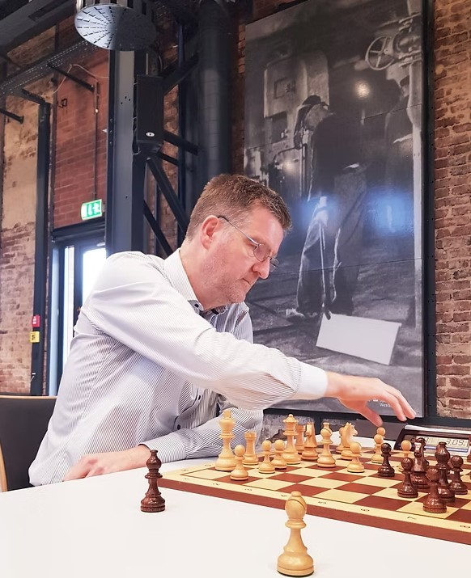
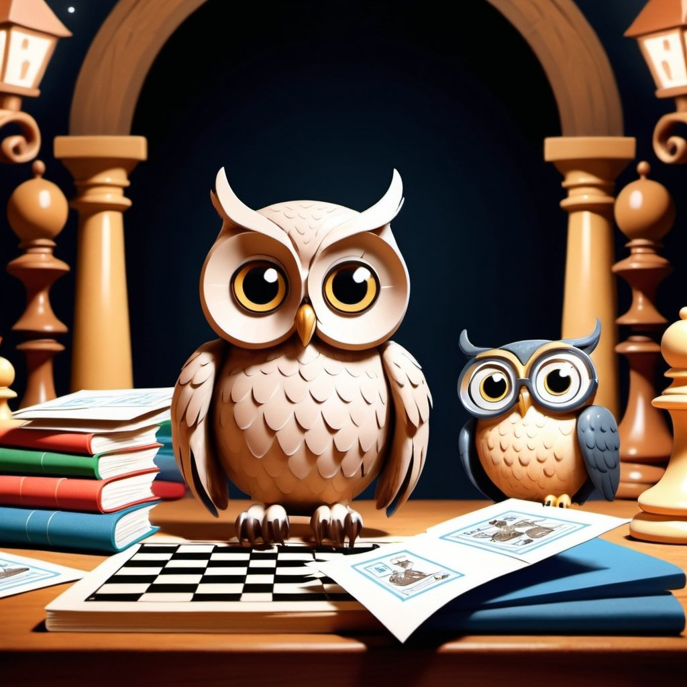
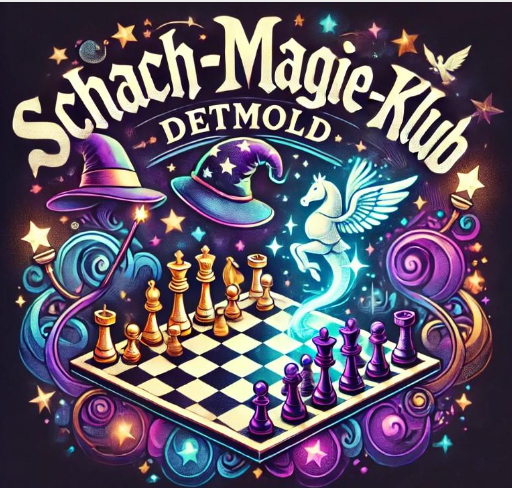
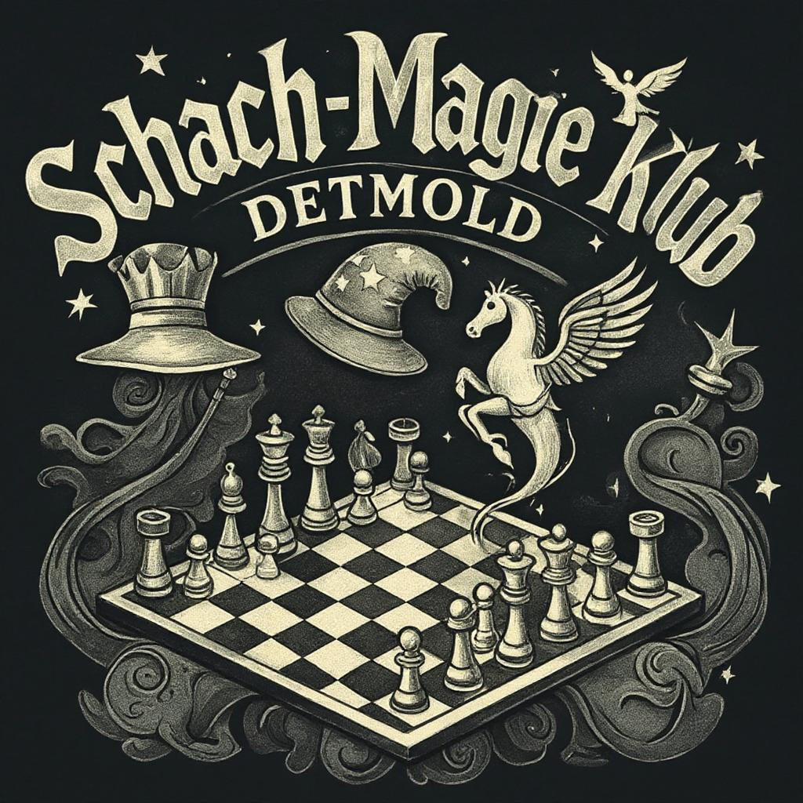
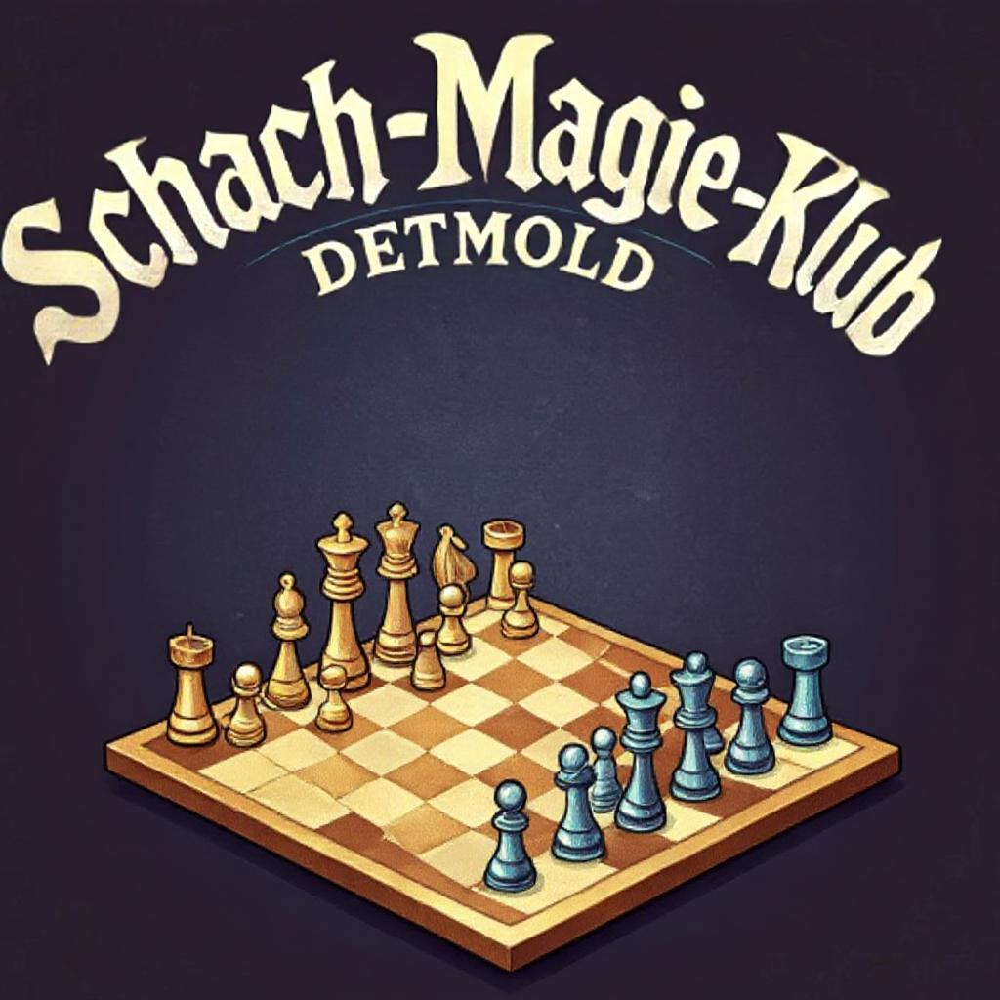

Über uns
Willkommen bei Schach-Magie!
Wir bieten wöchentliches Schachtraining für Schüler/innen zwischen 7 und 17 Jahren an. Das Training bei uns ist kostenlos, wir sind kein Verein und es herrscht eine lockere Atmosphäre ...
...schau doch einfach mal bei uns vorbei: Wir treffen uns jeden Freitag von 16 bis 18 Uhr im Cafe HerzStück ( Krumme Str. 44 ).
Termine
Unsere regelmäßigen Termine findest Du hier:
Training für Kinder und Jugendliche I (7 - 10 Jahre)
Datum: Jeden Freitag
Uhrzeit: 16:00 - 17:00 Uhr
Ort: Cafe Herzstück
Training für Kinder und Jugendliche II (11 - 17 Jahre)
Datum: Jeden Freitag
Uhrzeit: 17:00 - 18:00
Ort: Cafe Herzstück
Kontakt
Hast Du Fragen oder möchtest Du mit uns in Kontakt treten? Sende unserem Trainer-Team eine Email, oder kontaktiere uns per Telefon.
- E-Mail: Schach-Magie
- Telefon: +49(0)1757246357
Trainer-Team, Freunde & Partner

Arnold Essing
Trainer

Oliver Schulte
Trainer
Karsten Sieg
Trainer
Daniel Hawes
Trainer
Unsere Partner:
Galerie



Social Media
Du kannst uns auch auf sozialen Medien folgen!